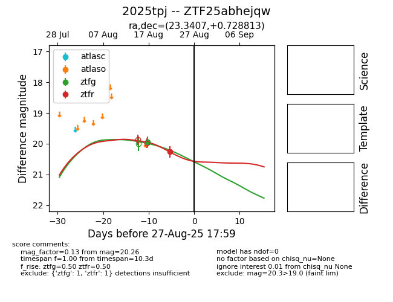

Target 2025tpj at 2025-08-27 17:59, see:
FINK: fink-portal.org/ZTF25abhejqw
Lasair: lasair-ztf.lsst.ac.uk/objects/ZTF25abhejqw
ALeRCE: alerce.online/object/ZTF25abhejqw
TNS: wis-tns.org/object/2025tpj
YSE: ziggy.ucolick.org/yse/transient_detail/2025tpj
alt names
ZTF25abhejqw (ztf,fink)
2025tpj (tns,yse)
coordinates:
equatorial (ra, dec) = (23.3407,+0.72881)
galactic (l, b) = (144.5218,-60.37363)
photometry
last ztfg=19.93, ztfr=20.26
1 ztfg, 1 ztfr detections
